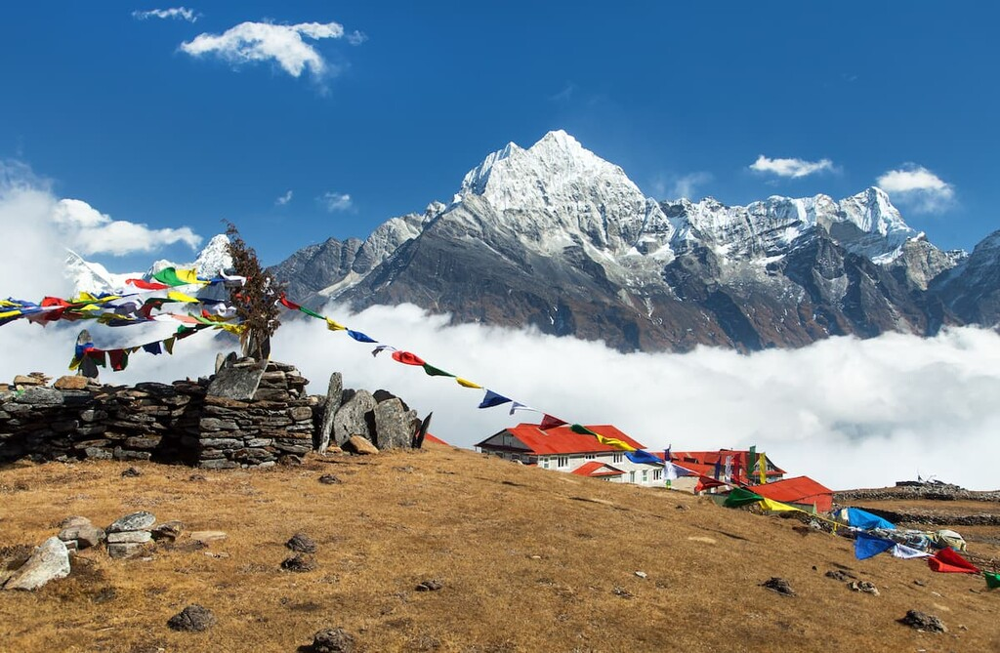

Discover the Beauty of Nepal
Nepal, nestled in the heart of the Himalayas, is a land of unparalleled natural beauty and rich cultural heritage.
From the majestic peaks of the Himalayas to the lush valleys dotted with ancient temples and monasteries, Nepal offers a truly enchanting experience for travelers.
Some must-visit destinations in Nepal include:
- Kathmandu, the vibrant capital city
- Mount Everest, the highest peak in the world
- Pokhara, known for its serene lakes and stunning mountain views
- Chitwan National Park, home to diverse wildlife including tigers, rhinos, and elephants
Embark on a journey to Nepal and immerse yourself in its beauty, spirituality, and adventure.